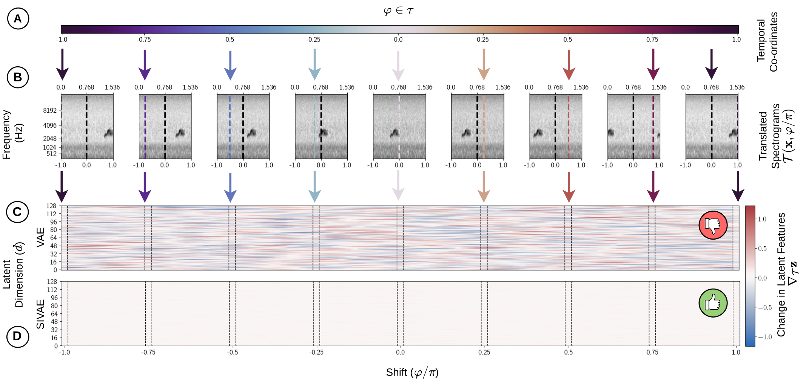
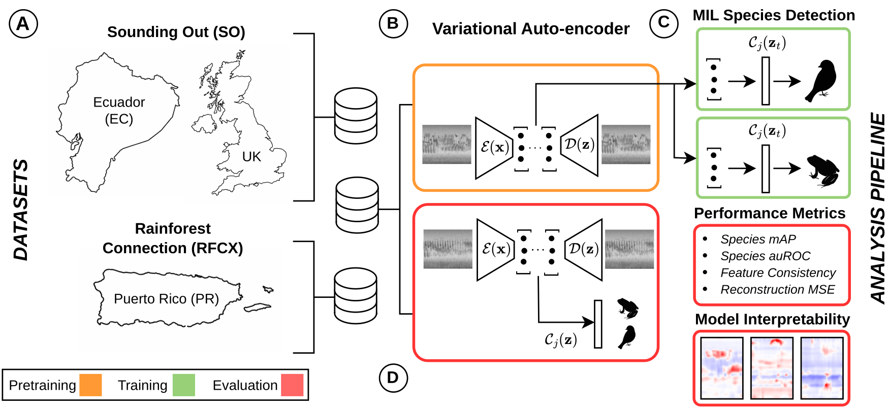
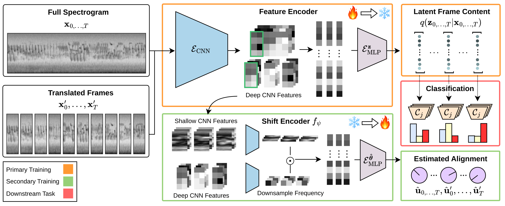
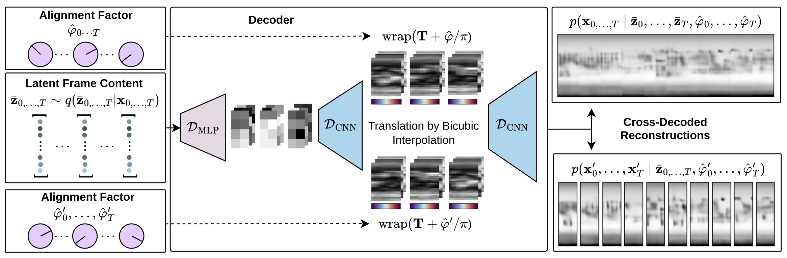
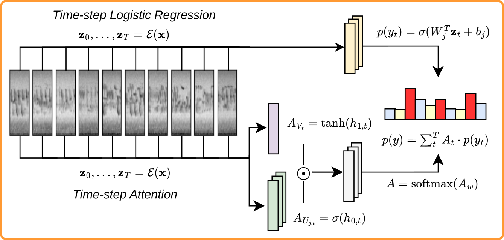
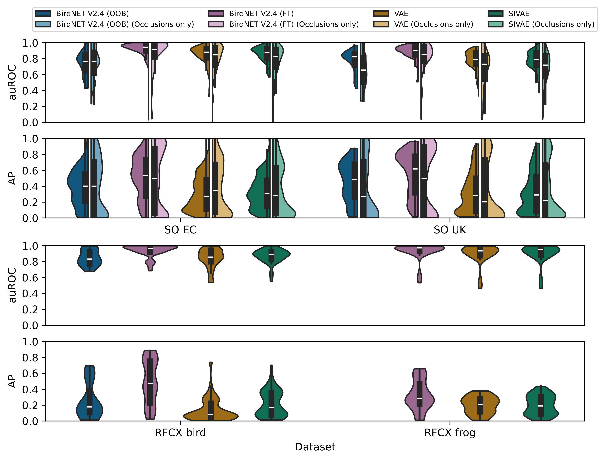
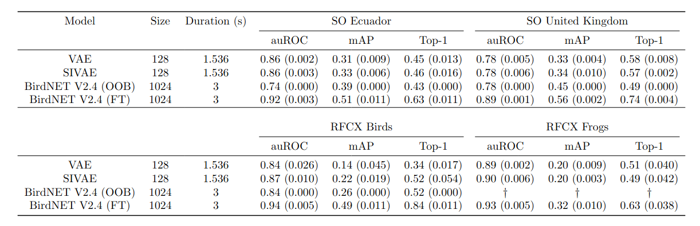
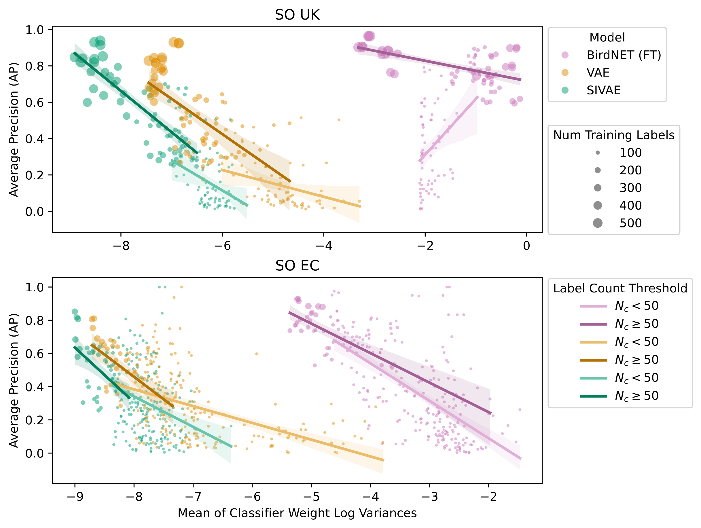

Abstract
Realising the potential for acoustic monitoring to deliver biodiversity insight at scale requires new approaches to the automated analysis of PAM recordings that are trustworthy and cost-effective. Discriminative models trained on annotated species data are gaining popularity but often lack interpretability, are labour intensive, notoriously opaque, often over-confident and potentially biased. We propose an interpretable framework for species detection in weakly labelled PAM audio. Self-supervised generative models such as Variational Autoencoders (VAE) offer great potential for learning expressive intrinsically interpretable representations that can be deployed in subsequent discriminative tasks.
We propose and evaluate a novel modification to the VAE learning algorithm that models intra-frame shift-invariance. We demonstrate that this modification (SIVAE) provides representations that are more interpretable, consistent and yield good performance on few-shot learning task with very weakly labels. Species-specific Linear classifiers were trained to predict the presence or absence of over 150 avian and anuran species using SIVAE representations of 60s long audio samples. A simple attention mechanism guides the selection of relevant frames to identify the most relevant timestep(s), while L1 regularisation sparsifies the linear model weights to perform species-specific feature selection.
Whilst demonstrated in terrestrial recordings, the approach is transferable to marine, freshwater, and soil habitats. These innovations set the path for trustworthy, data and time-efficient tools to support solid ecological inference from large-scale passive acoustic monitoring surveys.
Disentangling Intra-frame Shift
The absolute temporal position of events that lie within that frame (e.g. the onset of a particular bird vocalisation) are arbitrary when frames are segmented automatically (as is the norm). However, during training the classic VAE algorithm finds the most parsimonious compressed latent representation that minimises the difference between input and generated spectrograms. The results is spurious information (such as distance from frame start to signal onset) carries as much weight as more ecologically meaningful information (such as the distance between peaks or nuances of spectral morphology which represent acoustic traits of a given species).

We explicitly disentangle absolute position within a frame by enforcing representational consistency by a 2-way cross-decoding across paired instances, where each instance is a temporal translation of an input frame under a circular boundary condition. A shift prediction network is trained post-hoc to recover the intra-frame shift \(\varphi \in [-\pi, \pi]\) of the frame contents, with respect to the learned canonical timeline.
Analysis Pipeline

VAE variants were pre-trained to embed and reconstruct log Mel spectrograms. Each dataset is treated independently (SO / RFCX) and models of each variant are trained under 3 different random initialisations. Following self-supervised pre-training, encoder features are extracted and labels are split into sub-groups by country and taxon. Species detectors are then trained to predict the presence of species by attending to each frame independently. Details of the CNN architecture of VAEs can be found in our previous work with minor adjustments described in the preprocessing and VAE training sections in the methods.
Pretraining Architecture
SIVAE is pre-trained to embed and reconstruct log mel spectrograms.


Classification Architecture
Bayesian logistic classifiers are fit to samples from the learned posterior to predict weak presence / absence labels with a learned per-species gated attention mechanism to identify the most relevant frames \(t \in T\) in each sample.

Generative Species Representations
Using the generative model, we can inspect the basis of a detection by appling classifier weights as an affine transformation in the latent space, generating novel samples from regions predictive of each species. Specifically, we define a species presence transformation \(\mathcal{S}_j(\mathbf{z}_k)\):
$$ d_{j,k} = \frac{W_j^T\mathbf{z}_k + b}{||W_j||}, $$
$$ \bar{W}_j = \frac{W_j}{||W_j||}, $$
$$ \mathcal{S}_j(\mathbf{z}_k) = \mathbf{z}_k + (d_{j,k} + \delta)\bar{W}_j $$
where \(\mathbf{z}_k\) is a sample from an appropriate starting region of the latent space, \(d_{j,k}\) is the signed distance to the hyperplane for species \(j\), \(\bar{W}\) is the direction normal to the hyperplane and \(\delta\) is a tunable distance parameter beyond the decision boundary controlling the amplitude of the signal in the generated spectrogram. We set \(\mathbf{z}_k\) by taking the average for each habitat resulting in a habitat-specific silent background. The final result is decoded \(\mathcal{D}(\mathcal{S}_j(\mathbf{z}_k))\) providing a spectogram illustrating the predictive factors for each species.
(1) Select a species:
(2) Move across the hyperplane:
(3) Compare generated spectrogram with a typical example:

Observe that for many species, the spectro-temporal morphology of the call, its fundamental frequency and harmonics are used for delinating presence. However in nearly all cases, correlated soundscape components such as other species calls are used to aid or even dominate the prediction.
Species Detection


Relationship between classifier weight uncertainty, label frequency and average precision
